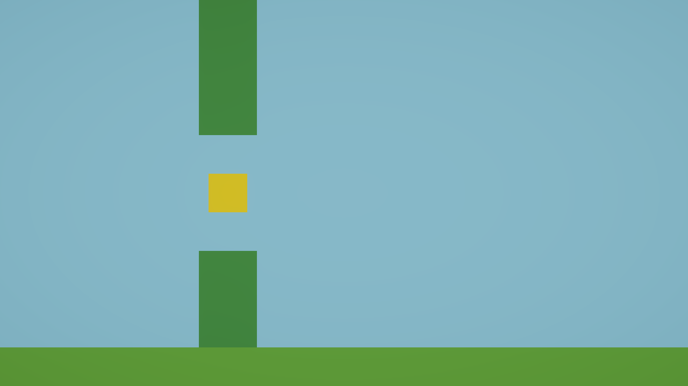

파이프 한 쌍이 흘러온다
3부가 시작된다. 이제 장애물을 만든다. 그런데 이번에 쓸 코드는 새 것이 아니다. 06~07번에서 새에게 썼다가 10번에서 지워낸 그 코드를 다시 꺼내 쓴다.
- 1빈 게임오브젝트를 껍데기로 써서 여러 물건을 하나로 묶을 수 있다.
- 2자식의 위치가 부모 기준이라는 것을 값으로 설명할 수 있다.
- 3새의 낙하 코드와 파이프의 이동 코드가 뭐가 같고 뭐가 다른지 말할 수 있다.

새에서 지운 코드를 파이프가 쓴다
10번에서 새의 낙하 코드를 지웠다. 그 코드는 이랬다.
transform.position += new Vector3(0f, -fallSpeed * Time.deltaTime, 0f);파이프는 정해진 속도로 정확히 왼쪽으로 흘러가야 한다. 가속도 필요 없고 부딪혀 튕길 필요도 없다. 그러니 물리를 쓸 이유가 없다. 위 코드를 축만 바꿔 그대로 쓰면 된다.
뭐가 같고 뭐가 다른가
코드를 보기 전에 스스로 생각해 보자. 새는 아래로 갔고, 파이프는 왼쪽으로 간다.
Vector3(?, ?, ?) 중 몇 번째 칸인가Time.deltaTime 은이건 계속 일어나는 일인가, 한 번 일어나는 일인가빈 게임오브젝트를 껍데기로
파이프는 위·아래 두 개가 한 쌍이다. 둘 사이에 새가 지나갈 틈이 있다.
두 개를 따로 움직이면 어떻게 될까? 각각에 이동 스크립트를 붙이면 굴러가긴 한다. 하지만 속도가 조금이라도 다르면 위아래가 어긋난다. 나중에 높이를 바꾸거나 지우려 할 때도 두 번씩 해야 한다.
그래서 빈 게임오브젝트를 하나 만들어 껍데기로 쓴다. 눈에 보이는 것은 아무것도 없고, 위치만 갖는 상자다.
PipePair 껍데기. 이것만 움직인다. 이동 스크립트는 여기에만 붙인다PipeTop위 파이프. 눈에 보이는 것PipeBottom아래 파이프. 눈에 보이는 것부모 기준 좌표
자식이 되고 나면 Inspector 에 보이는 Position 의 뜻이 달라진다. 더 이상 “세상에서의 위치”가 아니라 “부모로부터 얼마나 떨어져 있는가” 가 된다.
아래에서 부모를 움직여 보자. 자식의 Inspector 값은 하나도 안 변한다.
만들어 보자
1 · 껍데기 만들기
Create EmptyPipePair 로(11, 0, 0) 로 2 · 파이프 두 개 만들기
3D Object > Cube 로 두 개를 만들고, Hierarchy 에서 PipePair 위로 끌어다 놓아 자식으로 만든다. 그 다음 값을 맞춘다.
틈은 y = −1.5 ~ 1.5, 즉 3칸이다. 새가 1칸이니 넉넉하다. 계산해 보자 — 위 파이프는 중심이 4이고 세로 크기가 5이므로 아래끝이 4 − 2.5 = 1.5 다. 02번에서 바닥 윗면을 계산한 것과 같은 방식이다.
3 · 색 입히기
Assets/Materials 에 PipeMaterial 을 만들고 Base Map 을 2E7D32 로. 두 파이프에 모두 끌어다 놓는다.
4 · 이동 스크립트
Assets/Scripts 에 PipeMove 를 만든다.
using UnityEngine;
public class PipeMove : MonoBehaviour
{
public float speed = 3f;
void Update()
{
transform.position += new Vector3(________________, 0f, 0f);
}
}PipePair 에만 붙인다. 자식 둘에는 붙이지 않는다. 부모가 움직이면 자식은 따라간다.
정답 확인
transform.position += new Vector3(-speed * Time.deltaTime, 0f, 0f);y (두 번째)x (첫 번째)아래 vs 왼쪽−−둘 다 값이 작아지는 방향deltaTime곱한다곱한다둘 다 계속 일어나는 일+=쓴다쓴다지금 자리에서 옮긴다확인한다
문항 1 · 자식에도 스크립트를 붙이면
PipeTop 과 PipeBottom 에도 PipeMove 를 붙이면 어떻게 되나?
문항 2 · 부모를 움직였을 때 자식의 Inspector
PipePair 가 x=11 에서 x=0 으로 움직였다. 이때 PipeTop 의 Inspector 에 보이는 Position x 는?
PipeTop 은 부모와 같은 x 에 있으므로 처음부터 끝까지 0 이다. 세상에서의 위치는 부모 위치 + 자식 위치 로 계산된다.막혔을 때
-speed 로PipeMove 를 붙였다. 부모에만 붙인다PipePair 의 x 가 11 이 아니다. 화면 오른쪽 끝이 8.89 이므로 그보다 커야 밖에서 나타난다PipePair 의 Inspector 에서 Speed 를 바꾼다. 다만 확인이 끝나면 3 으로 되돌리자 — 13번과 16번이 이 값에 기댄다